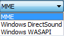
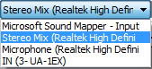
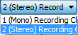
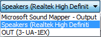

Device Toolbar
- Click on the toolbar image below to see this toolbar displayed in context of the default upper tooldock layout.
Drag Handle
Using the drag handle at right, you can expand Device Toolbar rightwards to be wider than the default width shown, or drag it leftwards to be less wide. You can hover over any of the four boxes in Audacity at any time to see the full text for the selected item.
Audio Host
- 
Selects the particular interface with which Audacity communicates with your chosen playback and recording devices.
On Windows, the choice is between the following audio interfaces:
- MME: This is the Audacity default and the most compatible with all audio devices.
- Windows DirectSound: This is more recent than MME with potentially less latency.
- Windows WASAPI: This host is the most recent Windows interface between applications (such as Audacity) and the soundcard driver. WASAPI was first officially released in 2007 in Windows Vista. WASAPI is particularly useful for "loopback" recording of computer playback. 24-bit recording devices are supported using this host. Playback is usually emulated. As a result, the playback slider in Mixer Toolbar will only scale the system playback slider's current level up or down rather than directly manipulating that system slider.
- Windows DirectSound may by default have only slightly lower latency than MME.
- Selecting Windows DirectSound or Windows WASAPI and enabling both "Exclusive Mode" boxes in Windows Sound allows Audacity to request audio direct from the device without resampling.
On Mac the only choice is Core Audio.
On Linux there is often only one option: ALSA. Other options could be OSS and/or Jack Audio Connection Kit (also known as "Jack" or "Jackd").Recording Device
- 
Choose the built-in or attached sound device that you want to use for recording.
In the image above, "Microsoft Sound Mapper - Input" appears when the Windows "MME" Audio Host is selected. Similarly to the "Mapper" output, the "Mapper" input is the device that is the current default Windows recording device. When "Windows DirectSound" Audio Host is selected, the device that maps to the current Windows recording device is called "Primary Sound Capture Driver".
In most cases (for example, the inbuilt computer sound device), each entry for recording device consists of the type of device (such as microphone), followed in parentheses by the name of the soundcard manufacturer.
On Mac, the internal soundcard recording inputs are usually referred to as "Built-in".
On GNU/Linux, recording is often managed by the pulse sound server. It is normally best to select "default". That will choose whatever is the system default soundcard or server, then choose the exact input device required in the control application for the card or server (such as Pulse Audio Volume Control). The (hw:) recording devices give direct, lower latency access to the soundcard inputs, bypassing any sound servers. For a built-in (hw:) sound device, choose the exact inputs in ALSAmixer.
| If you attach or disconnect an external device while Audacity is open, use to update the device lists before playing or recording. |
Recording Channels
- 
1 (Mono), 2 (Stereo) or the number of channels that are provided by the drivers of your sound device. On most inbuilt sound devices, especially on Windows, only mono or stereo will be available. For some devices on Windows, choosing Windows DirectSound in "Audio Host" above may be more likely to reveal options for recording more than two channels. On some devices capable of recording more than two channels, an explicit "multi" device may appear in the "Device" dropdown for recording all the channels simultaneously.
- If your recording device is mono, such as most microphone ports for the inbuilt sound device, selecting "2 (Stereo)" in Recording Channels duplicates the mono source to both channels, merely producing a dual mono recording.
- If your recording device is stereo, then as well as setting Recording Channels to "2 (Stereo)", ensure any settings in the system or sound device control panels are stereo. Many input devices on Windows default to mono recording even if they are stereo devices. To correct this, follow these instructions.
Playback Device
- 
Choose the built-in or attached sound device that you want to use for playback.
In the image above, "Microsoft Sound Mapper - Output" appears when the Windows "MME" Audio Host is selected. This "Mapper" device is not a separate playback device, but is the device that is currently chosen as the default system playback device in the Windows Control Panel. When "Windows DirectSound" Audio Host is selected, the device that maps to the current Windows playback device is called "Primary Sound Driver".
In most other cases (for example, the inbuilt computer sound device), each entry for playback device consists of the type of playback device (such as speakers), followed in parentheses by the name of the soundcard manufacturer (such as Realtek, Soundmax or IDT Audio).
On Mac, the internal soundcard playback device is usually referred to as "Built-in".
On GNU/Linux, playback is often managed by a sound server or mixer such as pulse or dmix. It is normally best to select "default". This will choose whatever is the system default playback device or server. The (hw:) playback devices give direct, lower latency access to the soundcard output, bypassing any sound servers.